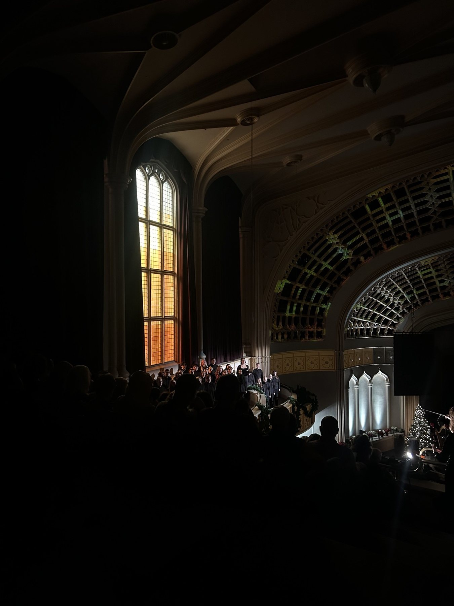
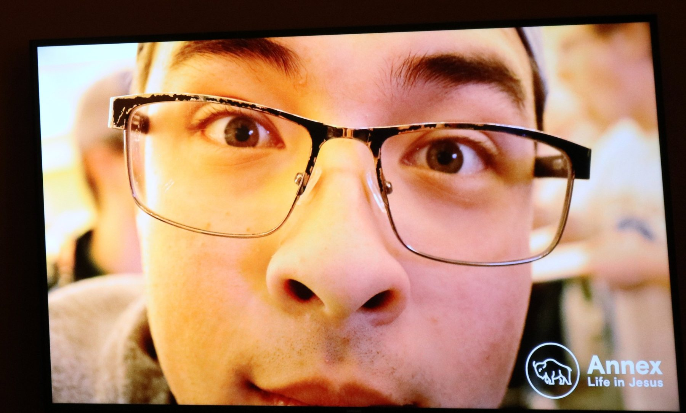

Response 5 - Assignment: Tone
1. Affinity of tone (art direction)
 Consistent tonal choices in art direction create visual unity
across elements.
Consistent tonal choices in art direction create visual unity
across elements.
2. Contrast of tone (art direction)

The dark surroundings and bright stage lighting create tonal
contrast that separates the performers from the space.
3. Affinity of tone (lighting)
Uniform lighting produces tonal affinity, giving the scene a
cohesive mood.
4. Contrast of tone (lighting)
 Contrasting light and shadow sculpt form and emphasize the
subject's presence.
Contrasting light and shadow sculpt form and emphasize the
subject's presence.
5. Coincidence of tone

Coincidence occurs where tonal matches link subjects and
background unexpectedly.
6. Non-coincidence of tone
 Non-coincidence uses differing tones to separate subjects from
their surroundings.
Non-coincidence uses differing tones to separate subjects from
their surroundings.